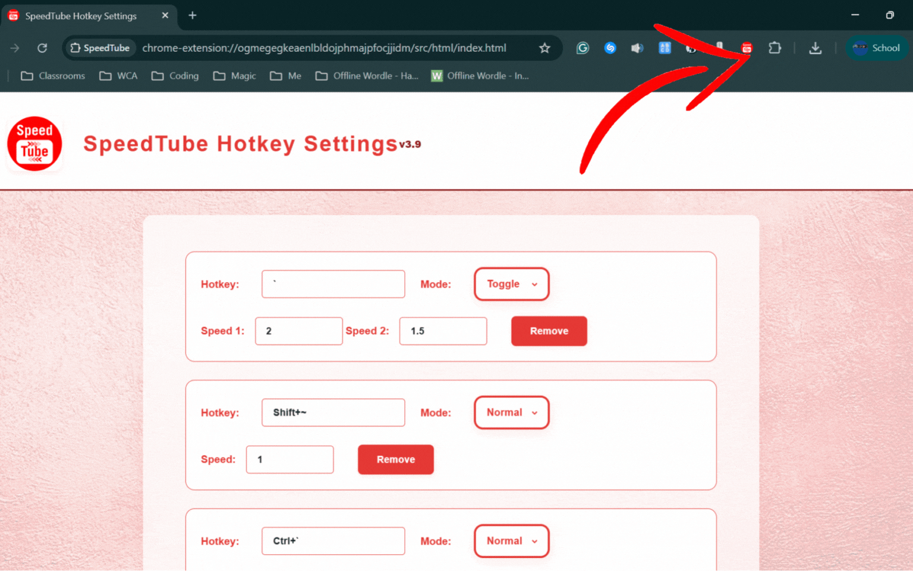
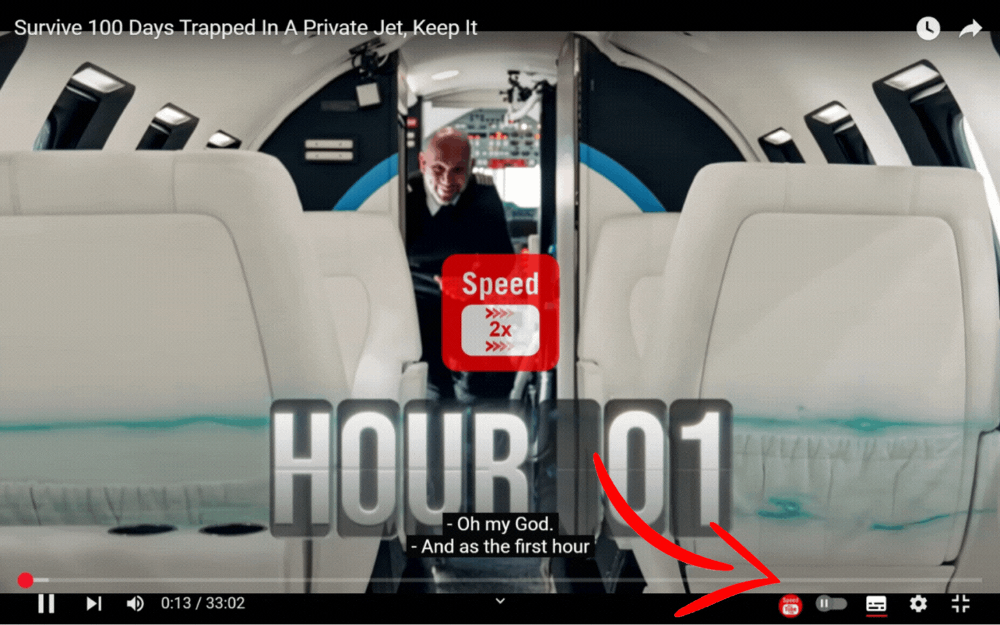
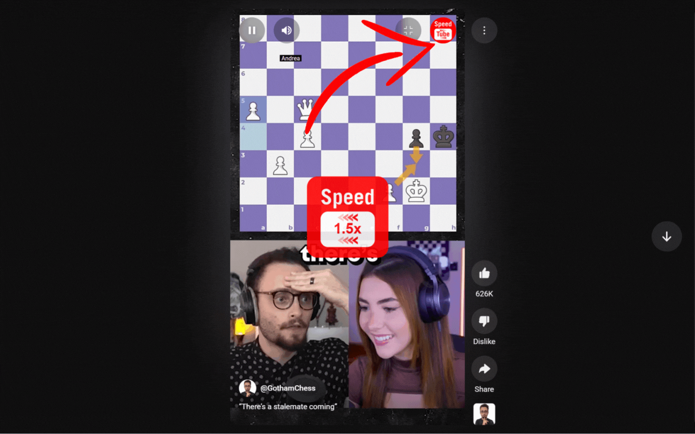
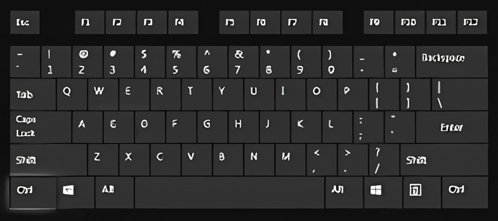

Adding a Hotkey: Click Add Hotkey to create a new hotkey entry. Click the hotkey field and press your desired key combination (e.g., hotkeyControlSlashCommandPlaceholder+Shift+S).
Moving a Hotkey: Click and drag the entire hotkey entry (the box with your hotkey and speed) using your mouse. Drop it in your desired position to reorder.
Setting Speed: Enter your desired playback speed (e.g., 1.5 for 1.5x) in the speed field. You can use up to four decimal places (e.g., 1.2345).
Toggle Mode: Choose Toggle to set two speeds. Pressing the hotkey will switch between them.
Normal Mode: Choose Normal to always set the video to a single speed when the hotkey is pressed.
Disabling a Hotkey: Toggle the switch in the top-right of the hotkey entry to turn it off or on.
Removing a Hotkey: Double click remove to delete a hotkey entry.
Saving: Changes are saved automatically as you edit.
Exporting the Hotkeys: Click the box icon 📦 in the top-right to download your hotkey settings as a file.
Importing the Hotkeys: Click the envelope icon 📩 in the top-right and select a previously exported file to load your hotkeys (it will overwrite the previous hotkeys). Drag and drop into the dotted region if you want to.
Sharing the Hotkeys: Click the arrow icon ➤ in the top-right to copy a link you can send to others to share your hotkey setup.
Saving the Shared Hotkeys: On a shared page, you can save the hotkeys by clicking the save button located at the top right, at the bottom of the page or press hotkeyControlSlashCommandPlaceholder + S.
Switching the Theme: You can switch between Dark Mode and Light Mode by clicking the button located at the top right or press hotkeyAlternateSlashOptionPlaceholder + T.
Limits: Minimum speed is 0.0625x, Maximum is 16x.
Supported Keys: You can use modifier keys (hotkeyListPlaceholder) and most keyboard keys.
Language: Keep your keyboard language the same when setting and using hotkeys.
Using Hotkeys: When watching a YouTube video or Short, press your hotkey to instantly change playback speed.
Smart Time: Shows how long a video takes to watch in real time, based on playback speed. Toggle with hotkeyAlternateSlashOptionPlaceholder + S or the Smart Time button in YouTube’s settings panel.
Using Autoplay: When watching a YouTube video or Short, press hotkeyControlSlashCommandPlaceholder + A or the Autoplay Button (for Shorts or ) to toggle Autoplay.
Autoplay Indication: A visual indicator shows if Autoplay is on (Auto ▶) or off (Auto ⏸). The button will also reflect the new state ( means Autoplay is on, while means Autoplay is off).
Information: Click the info icon i in the top-right at any time to view these instructions and get help with using SpeedTube.
How SpeedTube Works
SpeedTube lets you set up custom hotkeys to control YouTube playback speed instantly.
The extension works on all YouTube videos and Shorts.
Any speed you set in Shorts will automatically carry over to the next Shorts you view during the same session (this does not apply to normal YouTube videos).
You can open the settings page at any time pressing the extension icon , the SpeedTube button on YouTube videos or Shorts , or the hotkeyControlSlashCommandPlaceholder+S shortcut.
All your hotkeys and speeds are saved in your browser and sync across devices (if Chrome sync is enabled).
How to open the SpeedTube Settings page
Click the SpeedTube extension icon in your browser toolbar.

On normal YouTube videos, click the SpeedTube button in the video controls.

On YouTube Shorts, click the SpeedTube button in the Shorts controls.

Or, press hotkeyControlSlashCommandPlaceholder + S while watching a YouTube video.
